Project Setup and Build
Make a new Project in Xcode that is storyboard based.
Click the info tab in the Project Settings.
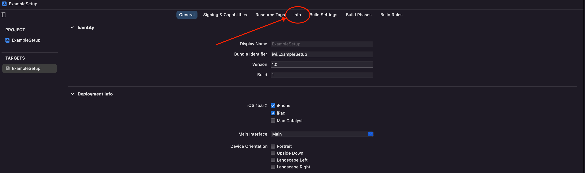
Hover over and click the minus button on the values in the image.
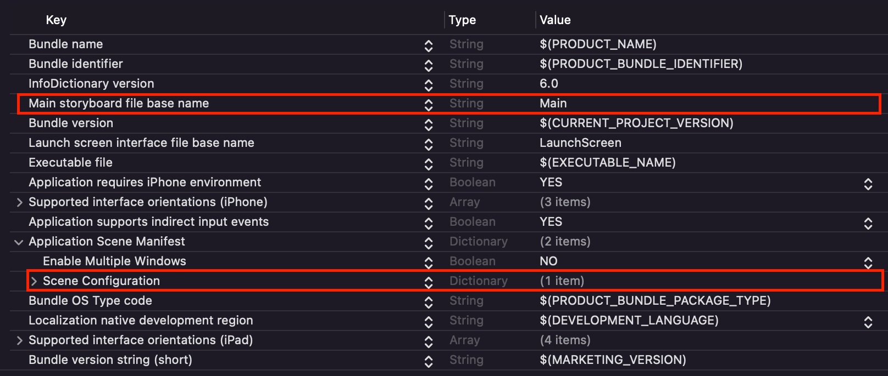
Click the build settings tab.
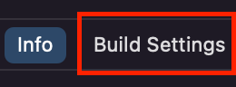
Scroll down to the iOS Deployment Target setting in Deployment header and click the dropdown menu.
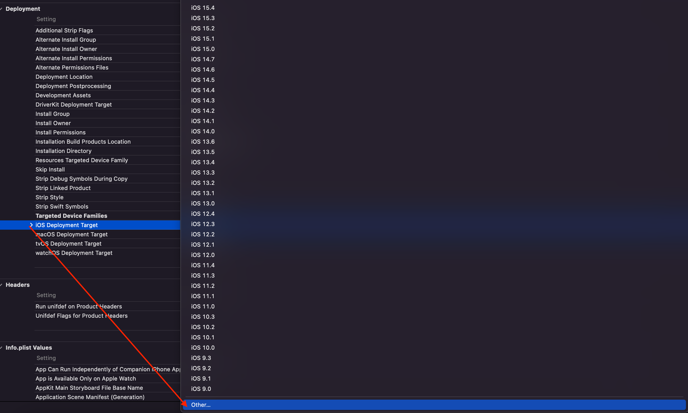
Scroll down inside that dropdown and click “other”, and type in “7.0”.
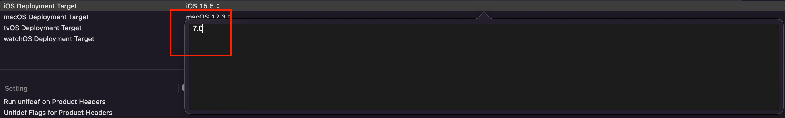
Right click and select delete on the two highlighted files.
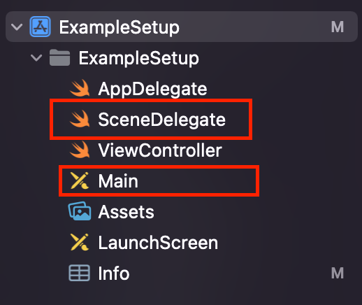
Open the LaunchScreen storyboard.
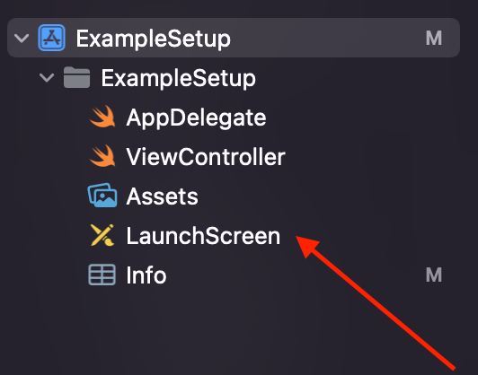
Click “View Controller Scene”.
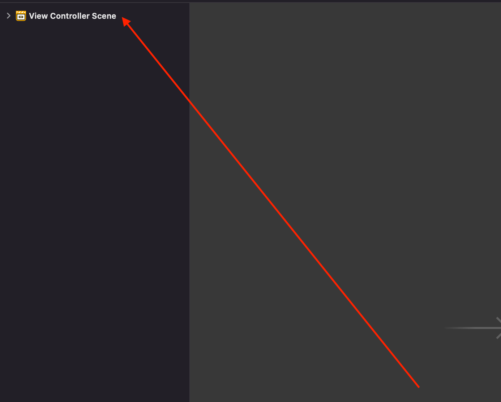
On the right, click the page option.
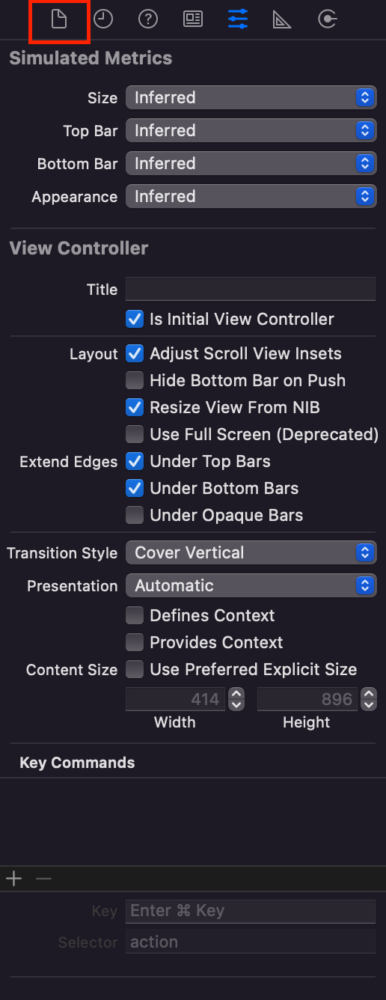
Uncheck the “Use Safe Area Layout Guides” option.
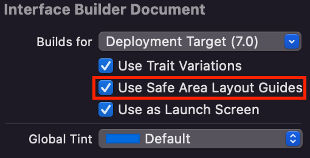
Go to the AppDelegate file.
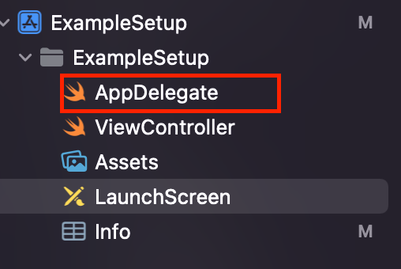
Copy the code below by pressing the copy button, then in your AppDelegate file, press Cmd+A to select all, and Cmd+V to paste the code.
// AppDelegate.swift import UIKit @main class AppDelegate: UIResponder, UIApplicationDelegate { var window: UIWindow? // Needed for apps not using SceneDelegate func application(_ application: UIApplication, didFinishLaunchingWithOptions launchOptions: [UIApplication.LaunchOptionsKey: Any]?) -> Bool { // Create a UIWindow manually window = UIWindow(frame: UIScreen.main.bounds) window?.rootViewController = ViewController() // Set initial ViewController window?.makeKeyAndVisible() return true } }
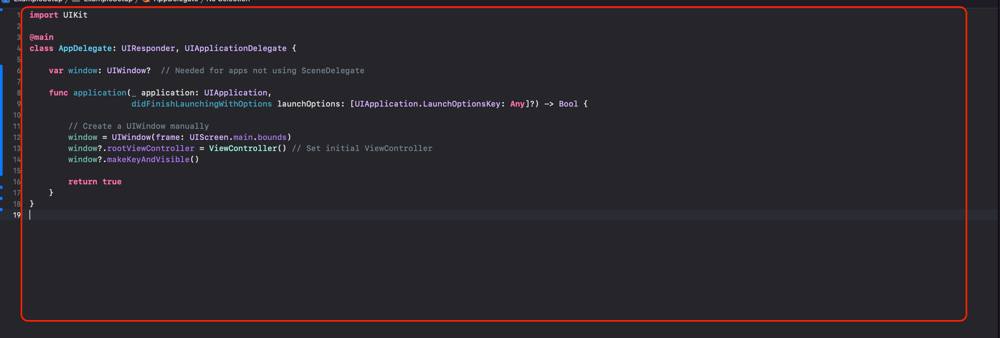
To build, navigate to your project directory in the terminal, drag my script onto the terminal and then type your app's Scheme name plus the directory you want it to put your ipa in (just put "build" if unsure).